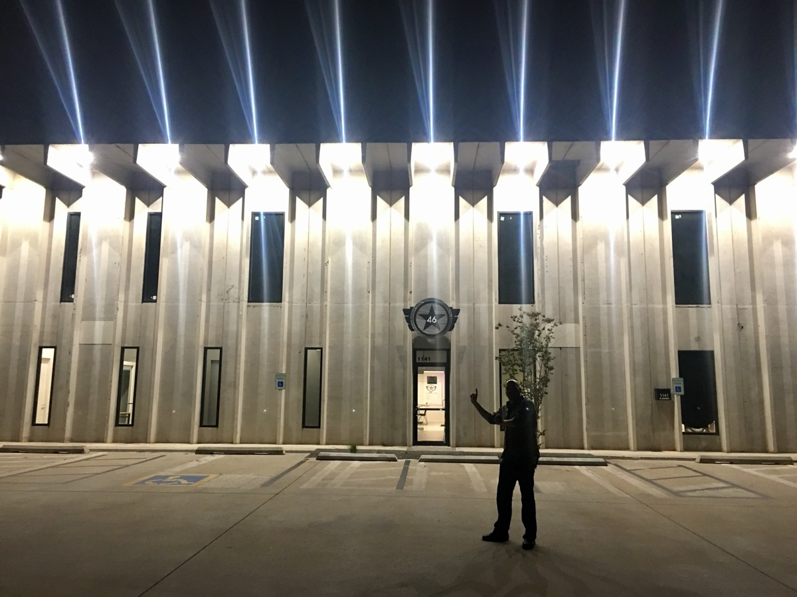

Welcome to my website. Learn about my background, explore my interests, browse my photos, or visit my contact page.
About Me
Hi, I'm Jaret Martin. I'm 42 years old and was born and raised in Oklahoma. I've also spent a lot of time living outside the state and have visited 60 countries.
My career has centered around technology, mostly in sales, before I got into startups. I'm also an owner of StarSpace 46, a tech-focused coworking space in Oklahoma City.
My interest in AI led me to Atlas. I have a startup called Draftex that provides story and script intelligence for filmmakers. It is still in development, and I hope to launch it soon.

Education
I earned an undergraduate degree in economics from Oklahoma State University.
I also participated in Semester at Sea, where I sailed around the world in 100 days. That experience sparked my interest in international business and working with developing countries.